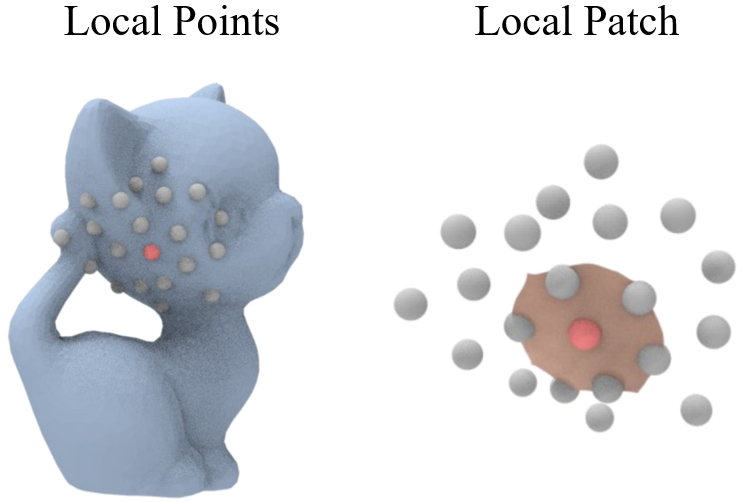

|
I am a Ph.D. candidate in the Graphics&Geometric Computing Laboratory (GCL)
at University of Science and Technology of China (USTC), supervised by Prof. Juyong Zhang.
Before that, I obtained my B.S. degree from South China University of Technology (SCUT) in 2019.
Google Scholar / Github / LinkedIn / CV |

|
|
My research interests include some sub-fields of Computer Vision and Computer Graphics:
|
[2022.09] One paper accepted by NeurIPS 2022 (1 Poster). [2022.06] One paper accepted by ACM MM 2022 (1 Poster). [2022.03] One paper accepted by CVPR 2022 (1 Poster). |
|
We propose Neural-DynamicReconstruction (NDR), a template-free method to recover high-fidelity geometry and motions of a dynamic scene from a monocular RGB-D camera. To represent and constrain the non-rigid deformations, we propose a novel neural invertible deforming network such that the cycle consistency between arbitrary two frames is automatically satisfied. |
|
We propose CariPainter, the first interactive caricature generating and editing method, by utilizing the semantic segmentation maps as an intermediary domain. |
 |
In this paper, we propose Neural Points, a novel point cloud representation. Different from traditional point cloud representation, each point in Neural Points represents a local continuous geometric shape via neural fields. Therefore, Neural Points can express more complex geometry shapes. |
 |
For non-rigid registration, we propose RMA-Net to deform the input surface shape stage by stage. RMA-Net is trained in an unsupervised manner via our proposed multi-view 2D projection loss. |
 |
To the best of our knowledge, this is the first work for automatic landmark detection and 3D face reconstruction for general caricatures. |
 |
We take the video stream from a single RGB camera as input, and generate a video stream that emulates the view from a virtual camera at a designated location. |
 |
Hongrui Cai. 2020 code Design a landmark-driven Facial Expression Recognition (FER) method without employing any pre-trained model from other tasks. |
Journal Reviewers of IEEE Transactions on Multimedia (TMM), Computers & Graphics (C&G). |
[2021.04] Invited talk about Caricature Face at CVM 2021. |
First-class Academic Scholarships for Postgraduates, by USTC, 2019 - 2022. Excellent Undergraduate Thesis Award, by SCUT, 2019. Excellent Undergraduate Student, by SCUT, 2019. |
Last update: 2022.10 |